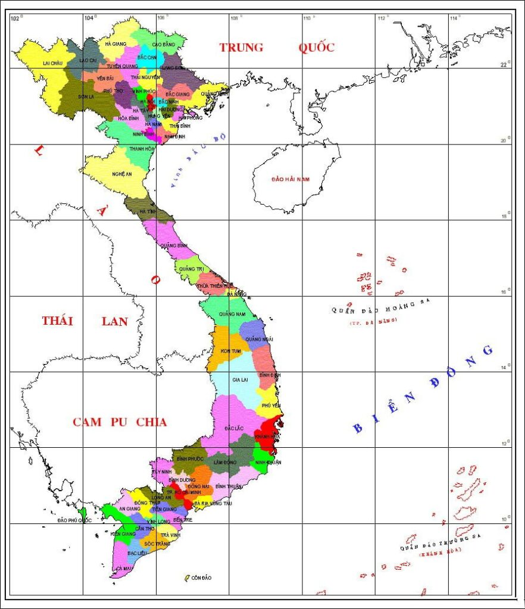

Bản Đồ Văn Hóa & Phương Ngữ
Chọn vùng miền để khám phá các dân tộc sinh sống chủ yếu tại đó.

Bắc
Đông Bắc & Tây Bắc Bộ
Trung
Duyên Hải Miền Trung
TN
Vùng cao nguyên đất đỏ
Nam
Đông Nam Bộ & Tây Nam Bộ
*Click vào các vị trí đã đánh dấu để xem thông tin vùng miền